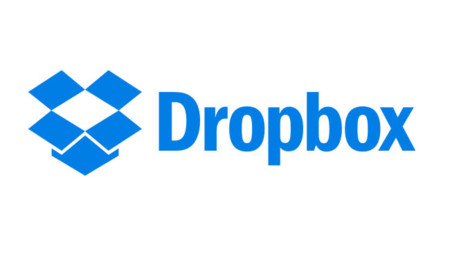

Dropbox es una herramienta que permite sincronizar archivos a través de un directorio virtual en la red. Esto nos permite disponer de un disco duro o carpeta virtual de forma remota y accesible, tener toda la información que deseemos en la red y con ello siempre disponible desde cualquier PC en cualquier parte del mundo.
Dropbox dispone de una versión de escritorio, que permite instalar un directorio en nuestro ordenador que guarda toda la información que queramos y cuando lo guardamos en ese directorio, se sincroniza con nuestro espacio en Internet. Eso permite tener siempre una copia de nuestros archivos sincronizada y guardada en Internet, de forma que cada vez que se haga cambios en nuestros documentos, se guardarán sincronizados en la red y conservando la versión antigua si la deseamos en el futuro.
Por defecto Dropbox nos permite tener un espacio de 10 GB gratis de espacio en disco para alojar nuestros archivos en la nube y si necesitamos más espacio solo es cuestión de contratar un plan de pago [6].
A continuación se muestra un videotutorial del uso de esta herramienta:
Enlace de la página de Dropbox